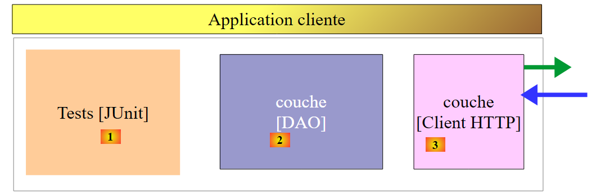
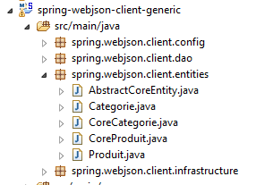
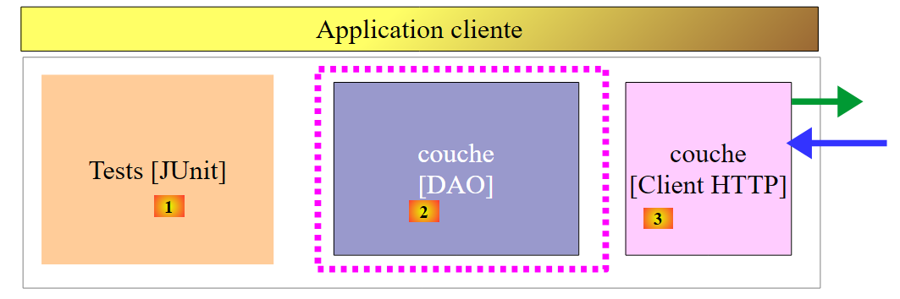
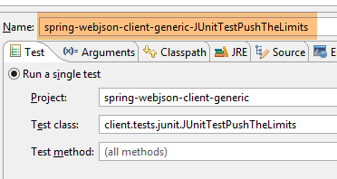
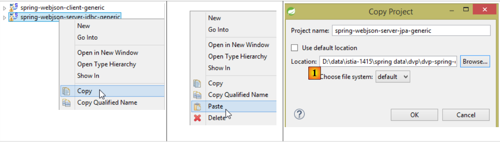
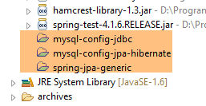
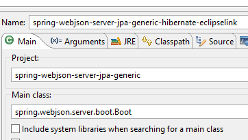
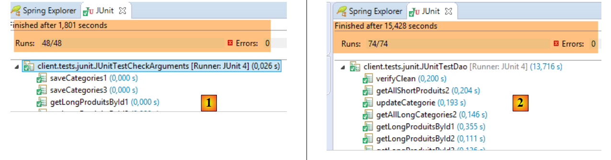
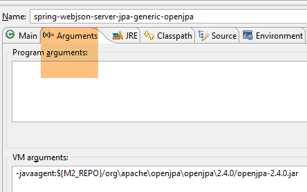

18. عميل مبرمج لخدمة الويب / jSON
الآن بعد أن أصبحت قاعدة البيانات [dbproduitscategories] متاحة على الويب، سنقوم بكتابة تطبيق يستفيد منها. وبذلك سنحصل على بنية العميل/الخادم التالية:
 |
سيتألف تطبيق العميل من ثلاث طبقات:
- طبقة [Client HTTP] [3] للتواصل مع تطبيق الويب / jSON الذي يعرض قاعدة البيانات؛
- طبقة [DAO] [2] ستقدم نفس واجهة الطبقة [DAO] [4]؛
- طبقة اختبار JUnit [1] للتحقق من أن العميل والخادم يؤديان مهامهما بشكل صحيح؛
18.1. مشروع Eclipse
مشروع Eclipse الخاص بالعميل هو كما يلي:
 |
 |  |  |
 |  |
- تحتوي الحزمة [spring.webjson.client.config] على تكوين Spring للطبقة [DAO]؛
- تحتوي الحزمة [spring.webjson.client.dao] على تنفيذ الطبقة [DAO]؛
- تحتوي الحزمة [spring.webjson.client.entities] على الكائنات المتبادلة مع خدمة الويب / jSON. نحن على دراية بها جميعًا؛
- تحتوي الحزمة [spring.webjson.client.infrastructure] على فئات الاستثناءات المستخدمة في المشروع. نحن على دراية بها جميعًا؛
18.2. إعدادات Maven للمشروع
المشروع هو مشروع Maven تم تكوينه بواسطة الملف [pom.xml] التالي:
<project xmlns="http://maven.apache.org/POM/4.0.0" xmlns:xsi="http://www.w3.org/2001/XMLSchema-instance"
xsi:schemaLocation="http://maven.apache.org/POM/4.0.0 http://maven.apache.org/xsd/maven-4.0.0.xsd">
<modelVersion>4.0.0</modelVersion>
<groupId>dvp.spring.database</groupId>
<artifactId>spring-webjson-client-generic</artifactId>
<version>0.0.1-SNAPSHOT</version>
<description>Client console du serveur web / jSON</description>
<name>spring-webjson-client-generic</name>
<properties>
<project.build.sourceEncoding>UTF-8</project.build.sourceEncoding>
<java.version>1.7</java.version>
</properties>
<parent>
<groupId>org.springframework.boot</groupId>
<artifactId>spring-boot-starter-parent</artifactId>
<version>1.2.3.RELEASE</version>
</parent>
<dependencies>
<!-- Spring -->
<dependency>
<groupId>org.springframework</groupId>
<artifactId>spring-web</artifactId>
</dependency>
<!-- مكتبة jSON المستخدمة بواسطة Spring -->
<dependency>
<groupId>com.fasterxml.jackson.core</groupId>
<artifactId>jackson-core</artifactId>
</dependency>
<dependency>
<groupId>com.fasterxml.jackson.core</groupId>
<artifactId>jackson-databind</artifactId>
</dependency>
<!-- مكون يستخدمه Spring RestTemplate -->
<dependency>
<groupId>org.apache.httpcomponents</groupId>
<artifactId>httpclient</artifactId>
</dependency>
<!-- Google Guava -->
<dependency>
<groupId>com.google.guava</groupId>
<artifactId>guava</artifactId>
<version>16.0.1</version>
</dependency>
<!-- مكتبة السجلات -->
<dependency>
<groupId>org.springframework.boot</groupId>
<artifactId>spring-boot-starter-logging</artifactId>
</dependency>
<!-- اختبار Spring Boot -->
<dependency>
<groupId>org.springframework.boot</groupId>
<artifactId>spring-boot-starter-test</artifactId>
<scope>test</scope>
</dependency>
<!-- Spring Boot -->
<dependency>
<groupId>org.springframework.boot</groupId>
<artifactId>spring-boot</artifactId>
<scope>test</scope>
</dependency>
</dependencies>
<!-- المكونات الإضافية -->
<build>
<plugins>
<plugin>
<groupId>org.apache.maven.plugins</groupId>
<artifactId>maven-surefire-plugin</artifactId>
<version>2.18.1</version>
</plugin>
</plugins>
</build>
</project>
- الأسطر 16-20: مشروع Maven الأصلي [spring-boot-starter-parent] الذي يسمح لنا بتحديد عدد من التبعيات دون ذكر إصداراتها، حيث يتم تحديد الإصدار في المشروع الأصلي؛
- الأسطر 24-27: على الرغم من أننا لا نكتب تطبيق ويب، إلا أننا نحتاج إلى التبعية [spring-web] التي تجلب معها الفئة [RestTemplate] التي تتيح التفاعل بسهولة مع تطبيق ويب / jSON؛
- الأسطر 29-36: مكتبة jSON؛
- الأسطر 38-41: تبعية ستسمح لنا بربط timeout بطلبات HTTP الصادرة عن العميل. timeout هو الحد الأقصى لوقت انتظار استجابة الخادم. بعد انقضاء هذا الوقت، يُبلغ العميل عن خطأ timeout عن طريق إلقاء استثناء؛
- الأسطر 43-48: مكتبة Google Guava؛
- الأسطر 50-53: مكتبة السجلات؛
- الأسطر 54-64: التبعية الخاصة باختبارات JUnit. وهي تتضمن على وجه الخصوص المكتبة JUnit 4 الضرورية للاختبارات. تحتوي هذه التبعيات على السمة [<scope>test</scope>] التي تشير إلى أنها ضرورية فقط لمرحلة الاختبارات. ولا يتم تضمينها في الأرشيف النهائي للمشروع؛
18.3. تكوين Spring
|
تقوم الفئة [AppConfig] بإجراء تكوين Spring للعميل HTTP. وفيما يلي شفرة البرمجة الخاصة بها:
package spring.webjson.client.config;
import java.util.ArrayList;
import java.util.List;
import org.springframework.beans.factory.config.ConfigurableBeanFactory;
import org.springframework.context.annotation.Bean;
import org.springframework.context.annotation.ComponentScan;
import org.springframework.context.annotation.Configuration;
import org.springframework.context.annotation.Scope;
import org.springframework.http.client.HttpComponentsClientHttpRequestFactory;
import org.springframework.http.converter.HttpMessageConverter;
import org.springframework.http.converter.json.MappingJackson2HttpMessageConverter;
import org.springframework.web.client.RestTemplate;
import com.fasterxml.jackson.databind.ObjectMapper;
import com.fasterxml.jackson.databind.ser.impl.SimpleBeanPropertyFilter;
import com.fasterxml.jackson.databind.ser.impl.SimpleFilterProvider;
@Configuration
@ComponentScan({ "spring.webjson.client.dao" })
public class AppConfig {
// الثوابت
static private final int TIMEOUT = 1000;
static private final String URL_WEBJSON = "http://localhost:8081";
// مرشحات jSON
@Bean
public ObjectMapper jsonMapper(RestTemplate restTemplate) {
return ((MappingJackson2HttpMessageConverter) (restTemplate.getMessageConverters().get(0))).getObjectMapper();
}
@Bean
@Scope(value = ConfigurableBeanFactory.SCOPE_PROTOTYPE)
ObjectMapper jsonMapperShortCategorie(RestTemplate restTemplate) {
ObjectMapper jsonMapper = jsonMapper(restTemplate);
jsonMapper.setFilters(new SimpleFilterProvider().addFilter("jsonFilterCategorie",
SimpleBeanPropertyFilter.serializeAllExcept("produits")));
return jsonMapper;
}
@Bean
@Scope(value = ConfigurableBeanFactory.SCOPE_PROTOTYPE)
ObjectMapper jsonMapperLongCategorie(RestTemplate restTemplate) {
ObjectMapper jsonMapper = jsonMapper(restTemplate);
jsonMapper.setFilters(new SimpleFilterProvider().addFilter("jsonFilterCategorie",
SimpleBeanPropertyFilter.serializeAllExcept()).addFilter("jsonFilterProduit",
SimpleBeanPropertyFilter.serializeAllExcept("categorie")));
return jsonMapper;
}
@Bean
@Scope(value = ConfigurableBeanFactory.SCOPE_PROTOTYPE)
ObjectMapper jsonMapperShortProduit(RestTemplate restTemplate) {
ObjectMapper jsonMapper = jsonMapper(restTemplate);
jsonMapper.setFilters(new SimpleFilterProvider().addFilter("jsonFilterProduit",
SimpleBeanPropertyFilter.serializeAllExcept("categorie")));
return jsonMapper;
}
@Bean
@Scope(value = ConfigurableBeanFactory.SCOPE_PROTOTYPE)
ObjectMapper jsonMapperLongProduit(RestTemplate restTemplate) {
ObjectMapper jsonMapper = jsonMapper(restTemplate);
jsonMapper.setFilters(new SimpleFilterProvider().addFilter("jsonFilterProduit",
SimpleBeanPropertyFilter.serializeAllExcept()).addFilter("jsonFilterCategorie",
SimpleBeanPropertyFilter.serializeAllExcept("produits")));
return jsonMapper;
}
@Bean
public RestTemplate restTemplate(int timeout) {
// إنشاء المكون RestTemplate
HttpComponentsClientHttpRequestFactory factory = new HttpComponentsClientHttpRequestFactory();
RestTemplate restTemplate = new RestTemplate(factory);
// المحول jSON
List<HttpMessageConverter<?>> messageConverters = new ArrayList<HttpMessageConverter<?>>();
messageConverters.add(new MappingJackson2HttpMessageConverter());
restTemplate.setMessageConverters(messageConverters);
// انتهاء مهلة التبادل
factory.setConnectTimeout(timeout);
factory.setReadTimeout(timeout);
// النتيجة
return restTemplate;
}
@Bean
public int timeout() {
return TIMEOUT;
}
@Bean
public String urlWebJson() {
return URL_WEBJSON;
}
}
- السطر 20: الفئة هي فئة تكوين Spring؛
- السطر 21: توجد مكونات Spring أخرى في الحزمة [spring.webjson.client.dao]؛
- السطر 25: يتم تعيين timeout لمدة ثانية واحدة (1000 مللي ثانية)؛
- الأسطر 88-91: الكائن الذي يُرجع هذه القيمة؛
- السطر 26: URL لخدمة الويب / jSON؛
- الأسطر 93-96: الكائن الذي يعرض هذه القيمة؛
- الأسطر 72-86: تكوين الفئة [RestTemplate] التي تضمن التبادل مع خدمة الويب / jSON. وعندما لا يتعين تكوينها، يمكن استخدامها في الكود بمجرد كتابة [new RestTemplate()]. هنا، نريد تعيين timeout للتبادل مع خدمة الويب / jSON. يتم تمرير المكون [timeout] الموجود في السطر 89 كمعلمة للطريقة [restTemplate] الموجودة في السطر 73؛
- السطر 75: المكون [HttpComponentsClientHttpRequestFactory] هو المكون الذي يسمح لنا بتحديد timeout للتبادلات (السطران 82-83)؛
- السطر 76: تم إنشاء الفئة [RestTemplate] باستخدام هذا المكون. ونظرًا لأنها تعتمد عليه للتواصل مع خدمة الويب / jSON، فستخضع عمليات التبادل بالفعل لـ timeout؛
- الأسطر 78-80: يتم ربط محول jSON بالفئة [RestTemplate]. وقد تطرقنا إلى هذا الأمر سابقًا عند دراسة خدمة الويب. يتبادل العميل والخادم أسطرًا نصية. يتولى المحول تحويل كائن إلى نص، والعكس بالعكس، أي تحويل نص إلى كائن. قد يكون هناك عدة محولات مرتبطة بالفئة [RestTemplate]، ويعتمد اختيار المحول في لحظة معينة على الرؤوس HTTP المرسلة من الخادم. هنا، لدينا محول واحد فقط هو jSON لأن أسطر النص المتبادلة هي من نوع jSON؛
- السطران 82-83: يتم تحديد معلمات timeout للتبادل؛
- الأسطر 28-70: تحدد مرشحات jSON. وهي نفس المرشحات الموجودة في الخادم والموضحة في الفقرة 17.3.2.1؛
- الأسطر 29-32: العنصر [jsonMapper] هو أداة التعيين jSON للمحول [MappingJackson2HttpMessageConverter] الذي قمنا بربطه بالفئة [RestTemplate]. ونحتاج إليه في تعريف المرشحات jSON؛
- الأسطر 34-41: كائن «بيان» يحدد مرشح jSON [catégorie sans ses produits]. تتلقى الطريقة [jsonMapperShortCategorie] كمعلمة كائن «بيان» [restTemplate] المُعرَّف في السطر 73؛
- السطر 37: يتم استدعاء الطريقة [jsonMapper] الموجودة في السطر 30 لاسترداد المُعَيِّن jSON؛
- السطران 38-39: يتم تعيين المرشح للحصول على فئة بدون منتجاتها؛
- السطر 40: يتم إعداد المُعيّن jSON وفقًا لهذه التهيئة؛
- الأسطر 42-51: مرشح jSON للحصول على فئة مع منتجاتها؛
- الأسطر 53-60: المرشح jSON للحصول على منتج بدون فئته؛
- الأسطر 62-70: المرشح jSON للحصول على منتج مع فئته؛
ستكون جميع هذه «البيانات» متاحة لرموز الطبقة [DAO] وكذلك للاختبارات JUnit.
18.4. تنفيذ العميل HTTP
 |
فيما سبق، الطبقة [Client HTTP] هي التي تتواصل مع خدمة الويب التي أنشأناها للتو. سنقوم بدراستها الآن.
 |
تقوم الفئة [Client] بتنفيذ التبادلات مع خدمة الويب / jSON. وهي تنفذ الواجهة [IClient] التالية:
package spring.webjson.client.dao;
import org.springframework.http.HttpMethod;
public interface IClient {
public <T1, T2> T1 getResponse(String url, HttpMethod method, int errStatus, T2 body);
}
تحتوي الواجهة على طريقة واحدة فقط هي [getResponse]:
- السطر 6: الطريقة [getResponse] هي طريقة عامة يتم تعيين معلماتها بواسطة نوعين:
- [T1]: هو نوع الاستجابة المتوقعة من الخادم في [Response<T1>]، على سبيل المثال [List<Categorie>]،
- [T2]: هو نوع المعلمة jSON التي يتم إرسالها بواسطة العمليات POST، على سبيل المثال [List<Produit>]؛
- السطر 6: تُرجع الطريقة [getResponse] نتيجة من النوع T1، على سبيل المثال [List<Categorie>]؛
- السطر 6: معلمات [getResponse] هي كما يلي:
- [String url]: URL المطلوب الاستعلام عنه؛
- [HttpMethod method]: طريقة HTTP الخاصة بالطلب، أو GET أو POST حسب الحالة،
- [int errStatus]: رمز الخطأ الذي يجب استخدامه في الفئة [DaoException]، في حالة حدوث خطأ أثناء الاتصال بالخادم،
- [T2 body]: القيمة التي يجب إرسالها في حالة وجود POST؛
تقوم الفئة [Client] بتنفيذ واجهة [IClient] بالطريقة التالية:
package spring.webjson.client.dao;
import java.net.URI;
import java.util.ArrayList;
import java.util.List;
import org.springframework.beans.factory.annotation.Autowired;
import org.springframework.core.ParameterizedTypeReference;
import org.springframework.http.HttpMethod;
import org.springframework.http.MediaType;
import org.springframework.http.RequestEntity;
import org.springframework.http.ResponseEntity;
import org.springframework.stereotype.Component;
import org.springframework.web.client.RestTemplate;
import spring.webjson.client.infrastructure.DaoException;
@Component
public class Client implements IClient {
// عمليات الإدخال
@Autowired
protected RestTemplate restTemplate;
@Autowired
protected String urlServiceWebJson;
// محلي
private String simpleClassName = getClass().getSimpleName();
// طلب عام
@Override
public <T1, T2> T1 getResponse(String url, HttpMethod method, int errStatus, T2 body) {
...
}
// قائمة رسائل الخطأ الخاصة باستثناء
protected List<String> getMessagesForException(Exception exception) {
...
}
}
- السطر 18: الفئة [Client] هي مكون Spring، وبالتالي يمكن حقنها في مكونات Spring أخرى؛
- السطران 22-23: حقن المكون [RestTemplate] المُعرَّف في [AppConfig] (انظر الفقرة 18.3) الذي يضمن الاتصال بالخادم؛
- السطران 24-25: حقن مكون URL الخاص بخدمة الويب / jSON المُعرَّف في [AppConfig] (انظر الفقرة 18.3)؛
- الأسطر 37-39: الطريقة الخاصة [getMessagesForException] هي طريقة مساعدة تسمح بالحصول على قائمة رسائل الخطأ الموجودة في استثناء. وقد صادفناها عدة مرات؛
لنواصل:
// استعلام عام
@Override
public <T1, T2> T1 getResponse(String url, HttpMethod method, int errStatus, T2 body) {
// استجابة الخادم
ResponseEntity<Response<T1>> response;
try {
// جاري إعداد الطلب
RequestEntity<?> request = null;
if (method == HttpMethod.GET) {
request = RequestEntity.get(new URI(String.format("%s%s", urlServiceWebJson, url)))
.accept(MediaType.APPLICATION_JSON).build();
}
if (method == HttpMethod.POST) {
request = RequestEntity.post(new URI(String.format("%s%s", urlServiceWebJson, url)))
.header("Content-Type", "application/json").accept(MediaType.APPLICATION_JSON).body(body);
}
// تنفيذ الطلب
response = restTemplate.exchange(request, new ParameterizedTypeReference<Response<T1>>() {
});
} catch (Exception e) {
// تغليف الاستثناء
throw new DaoException(errStatus, e, simpleClassName);
}
...
}
- السطر 18: الأمر الذي يوجه الطلب إلى الخادم ويتلقى الرد منه. يوفر المكون [RestTemplate] عددًا كبيرًا من الطرق للتبادل مع الخادم، لكن الطريقة [exchange] هي الوحيدة التي تقبل معلمات عامة. ولهذا السبب تم اختيارها. تحدد المعلمة الثانية نوع الرد المتوقع. أما المعلمة الأولى فهي الطلب من النوع [RequestEntity] (السطر 8). ونتيجة الطريقة [exchange] هي من النوع [ResponseEntity<Response<T1>>] (السطر 5). يحتوي النوع [ResponseEntity] على الاستجابة الكاملة من الخادم، بما في ذلك الرؤوس HTTP والمستند الذي أرسله الخادم. وبالمثل، فإن النوع [RequestEntity] يغلف كامل طلب العميل بما في ذلك رؤوس HTTP والقيمة التي تم إرسالها (إن وجدت)؛
- الأسطر 8-16: يتعين علينا إنشاء الطلب من النوع [RequestEntity]. ويختلف هذا الطلب اعتمادًا على ما إذا كنا نستخدم GET أو POST لإجراء الطلب؛
- السطر 10: الاستعلام الخاص بـ GET. توفر الفئة [RequestEntity] طرقًا ثابتة لإنشاء الاستعلامات GET، POST، HEAD،... تسمح الطريقة [RequestEntity.get] بإنشاء استعلام GET من خلال ربط الطرق المختلفة التي تبني هذا الاستعلام:
- تقبل الطريقة [RequestEntity.get] كمعلمة الهدف URL في شكل مثيل URI،
- تسمح الطريقة [accept] بتحديد عناصر رأس الطلب HTTP [Accept]. هنا، نشير إلى أننا نقبل النوع [application/json] الذي سيرسله الخادم؛
- تستخدم الطريقة [build] هذه المعلومات المختلفة لإنشاء نوع الطلب [RequestEntity]؛
- السطر 14: الطلب الخاص بـ POST. تتيح الطريقة [RequestEntity.post] إنشاء طلب POST من خلال ربط الطرق المختلفة التي تبني هذا الطلب:
- تقبل الطريقة [RequestEntity.post] كمعلمة الـ URL المستهدف في شكل مثيل URI،
- تُعرّف الطريقة [header] رأسًا HTTP. هنا نرسل إلى الخادم رأس [Content-Type: application/json] لإعلامه بأن القيمة المرسلة ستصل إليه في شكل سلسلة jSON؛
- تسمح الطريقة [accept] بالإشارة إلى أننا نقبل النوع [application/json] الذي سيقوم الخادم بإرساله؛
- تحدد الطريقة [body] القيمة المرسلة. وهي المعلمة الرابعة للطريقة العامة [getResponse] (السطر 1)؛
- الأسطر 20-23: في حالة حدوث خطأ في الاتصال بالخادم، يتم إثارة استثناء من النوع [DaoException] مع رمز الخطأ المتمثل في المعلمة [errStatus] التي تم تمريرها كمعلمة ثالثة للطريقة العامة [getResponse] (السطر 3)؛
تستمر الطريقة [getResponse] على النحو التالي:
// طلب عام
@Override
public <T1, T2> T1 getResponse(String url, HttpMethod method, int errStatus, T2 body) {
...
// استرداد نص الرد
Response<T1> entity = response.getBody();
int status = entity.getStatus();
// هل توجد أخطاء من جانب الخادم؟
if (status != 0) {
// يتم إنشاء استثناء
throw new DaoException(status, new RuntimeException(entity.getException()), simpleClassName);
} else {
// كل شيء على ما يرام
return entity.getBody();
}
}
- السطر 4: تلقينا الرد من الخادم. وهو من النوع [ResponseEntity<Response<T1>>] (السطر 5 من الكود السابق الذي تمت دراسته) حيث الفئة [Response] هي الفئة المستخدمة بالفعل على جانب الخادم:
package spring.webjson.client.dao;
public class Response<T> {
// ----------------- الخصائص
// حالة العملية
private int status;
// الاستثناء المحتمل
private String exception;
// نص الرد
private T body;
// المنشئات
public Response() {
}
public Response(int status, String exception, T body) {
this.status = status;
this.exception = exception;
this.body = body;
}
// أدوات الاسترجاع والتعيين
...
}
لنعد إلى الطريقة [getResponse]:
- السطر 6: نسترد المستند من النوع [Response<T1>] المُغلف في الرد. يحتوي هذا النوع على الحقول [int status, String exception, T1 body]؛
- السطر 7: نسترد [status] من الرد وهو رمز خطأ؛
- الأسطر 9-12: في حالة وجود خطأ، يتم إثارة استثناء يتضمن معلومتي [status, exception] الواردتين في استجابة الخادم؛
- السطر 14: وإلا فإننا نُرجع النوع [T1] الموجود في الرد من النوع [Response<T1>]؛
الفئة [Client] هي فئة عامة. ويمكن استخدامها لأي عميل ويب / jSON.
18.5. تنفيذ الطبقة [Dao]
 |
 |
18.5.1. الفئة [AbstractDao]
تتميز الطبقة [DAO] من جانب العميل بنفس واجهة الطبقة [DAO] من جانب الخادم (انظر الفقرة 4.7):
package spring.webjson.client.dao;
import java.util.List;
import spring.webjson.client.entities.AbstractCoreEntity;
public interface IDao<T extends AbstractCoreEntity> {
// قائمة بجميع الكيانات T
public List<T> getAllShortEntities();
public List<T> getAllLongEntities();
// الكيانات المحددة - النسخة المختصرة
public List<T> getShortEntitiesById(Iterable<Long> ids);
public List<T> getShortEntitiesById(Long... ids);
public List<T> getShortEntitiesByName(Iterable<String> names);
public List<T> getShortEntitiesByName(String... names);
// الكيانات المحددة - النسخة الطويلة
public List<T> getLongEntitiesById(Iterable<Long> ids);
public List<T> getLongEntitiesById(Long... ids);
public List<T> getLongEntitiesByName(Iterable<String> names);
public List<T> getLongEntitiesByName(String... names);
// تحديث عدة كيانات
public List<T> saveEntities(Iterable<T> entities);
public List<T> saveEntities(@SuppressWarnings("unchecked") T... entities);
// حذف جميع الكيانات
public void deleteAllEntities();
// حذف عدة كيانات
public void deleteEntitiesById(Iterable<Long> ids);
public void deleteEntitiesById(Long... ids);
public void deleteEntitiesByName(Iterable<String> names);
public void deleteEntitiesByName(String... names);
public void deleteEntitiesByEntity(Iterable<T> entities);
public void deleteEntitiesByEntity(@SuppressWarnings("unchecked") T... entities);
}
تنفذ الفئة [AbstractDao] الواجهة [IDao]. وهي فئة مماثلة للفئة التي تحمل الاسم نفسه على جانب الخادم (انظر الفقرة 4.8). وهي تُستخدم كفئة أم للفئتين [DaoCategorie] و [DaoProduit]. وهي ليست متطابقة لسببين:
- على جانب الخادم، تدير الفئة [AbstractDao] معلومة:
// إضافات
@Autowired
@Qualifier("maxPreparedStatementParameters")
protected int maxPreparedStatementParameters;
التي لا نحتاجها هنا.
- على جانب الخادم، تستخدم الفئة [AbstractDao] التعليقات التوضيحية [@Transactional] لتغليف كل طريقة في معاملة. أما على جانب العميل، فلا توجد قاعدة بيانات لإدارتها. ولذلك تختفي هذه التعليقات التوضيحية؛
تكتفي الفئة [AbstractDao] بالتحقق من صحة معلمات استدعاء طرق واجهة [IDao] قبل تفويض الاستدعاء إلى الفئات الفرعية:
package spring.webjson.client.dao;
import java.util.ArrayList;
import java.util.List;
import spring.webjson.client.entities.AbstractCoreEntity;
import spring.webjson.client.infrastructure.MyIllegalArgumentException;
import com.google.common.collect.Lists;
public abstract class AbstractDao<T1 extends AbstractCoreEntity> implements IDao<T1> {
// محلي
protected String simpleClassName = getClass().getSimpleName();
@Override
public List<T1> getShortEntitiesById(Iterable<Long> ids) {
// صحة الوسيطة
List<T1> entities = checkNullOrEmptyArgument(true, ids);
if (entities != null) {
return entities;
}
// النتيجة
return getShortEntitiesById(Lists.newArrayList(ids));
}
@Override
public List<T1> getShortEntitiesById(Long... ids) {
// صحة الوسيطة
List<T1> entities = checkNullOrEmptyArgument(true, ids);
if (entities != null) {
return entities;
}
// النتيجة
return getShortEntitiesById(Lists.newArrayList(ids));
}
...
@Override
public void deleteEntitiesByEntity(@SuppressWarnings("unchecked") T1... entities) {
...
}
// الطرق الخاصة ----------------------------------------------
private <T3> List<T1> checkNullOrEmptyArgument(boolean checkEmpty, Iterable<T3> elements) {
// عناصر فارغة؟
if (elements == null) {
throw new MyIllegalArgumentException(222, new NullPointerException("L'argument ne peut être null"),
simpleClassName);
}
// عناصر فارغة؟
if (!elements.iterator().hasNext()) {
if (checkEmpty) {
throw new MyIllegalArgumentException(223, new RuntimeException("l'argument ne peut être une liste vide"),simpleClassName);
} else {
return new ArrayList<T1>();
}
}
// النتيجة الافتراضية
return null;
}
@SuppressWarnings("unchecked")
private <T3> List<T1> checkNullOrEmptyArgument(boolean checkEmpty, T3... elements) {
// عناصر فارغة؟
if (elements == null) {
throw new MyIllegalArgumentException(222, new NullPointerException("L'argument ne peut être null"),simpleClassName);
}
// عناصر فارغة؟
if (elements.length == 0) {
if (checkEmpty) {
throw new MyIllegalArgumentException(223, new RuntimeException("L'argument ne peut être une liste vide"),
simpleClassName);
} else {
return new ArrayList<T1>();
}
}
// النتيجة الافتراضية
return null;
}
// طرق محمية ----------------------------------------------
abstract protected List<T1> getShortEntitiesById(List<Long> ids);
abstract protected List<T1> getShortEntitiesByName(List<String> names);
abstract protected List<T1> getLongEntitiesById(List<Long> ids);
abstract protected List<T1> getLongEntitiesByName(List<String> names);
abstract protected List<T1> saveEntities(List<T1> entities);
abstract protected void deleteEntitiesById(List<Long> ids);
abstract protected void deleteEntitiesByName(List<String> names);
}
18.5.2. الفئة [DaoCategorie]
 |
الفئة [DaoCategorie] هي كما يلي:
package spring.webjson.client.dao;
import java.util.List;
import org.springframework.beans.factory.annotation.Autowired;
import org.springframework.context.ApplicationContext;
import org.springframework.http.HttpMethod;
import org.springframework.stereotype.Component;
import spring.webjson.client.entities.Categorie;
import spring.webjson.client.entities.CoreCategorie;
import spring.webjson.client.entities.CoreProduit;
import spring.webjson.client.entities.Produit;
import spring.webjson.client.infrastructure.DaoException;
import com.fasterxml.jackson.core.type.TypeReference;
import com.fasterxml.jackson.databind.ObjectMapper;
@Component
public class DaoCategorie extends AbstractDao<Categorie> {
@Autowired
private ApplicationContext context;
@Autowired
private IClient client;
...
}
- السطر 19: الفئة [DaoClient] هي مكون Spring يمكن من خلاله حقن مكونات Spring أخرى؛
- السطر 20: الفئة [DaoClient] تمتد من الفئة [AbstractDao<Categorie>] التي رأيناها للتو، وبالتالي فهي تُنفِّذ الواجهة [IDao<Categorie>]؛
- السطران 22-23: يتم إدخال سياق Spring للوصول إلى مكوناته؛
- السطران 24-25: يتم حقن العميل HTTP الذي قمنا بإنشائه للتو؛
تتبع جميع عمليات تنفيذ الطرق المختلفة للواجهة [DaoCategorie] نفس النمط. سنعرض ثلاث طرق، إحداها تعتمد على عملية [GET]، والأخريان تعتمدان على عملية [POST].
18.5.2.1. الطريقة [getAllLongEntities]
تُرجع الطريقة [getAllLongEntities] النسخة المطولة لجميع الفئات الموجودة في قاعدة البيانات:
@Override
public List<Categorie> getAllLongEntities() {
try {
// مرشحات jSON
ObjectMapper mapper = context.getBean("jsonMapperLongCategorie", ObjectMapper.class);
// الحصول على جميع الفئات
Object map = client.<List<Categorie>, Void> getResponse("/getAllLongCategories", HttpMethod.GET, 232, null);
// قائمة الفئات List<Categorie>
List<Categorie> categories = mapper.readValue(mapper.writeValueAsString(map),
new TypeReference<List<Categorie>>() {
});
// إعادة إنشاء الارتباط بين المنتج والفئة
return linkCategorieWithProduits(categories);
} catch (DaoException e1) {
throw e1;
} catch (Exception e2) {
throw new DaoException(233, e2, simpleClassName);
}
}
- السطر 2: تعرض الطريقة قائمة الفئات في صيغتها الكاملة؛
- السطر 5: أداة التعيين jSON التي ستسمح بتسلسل القيمة المرسلة (لا توجد قيمة) وإلغاء تسلسل الاستجابة التي تقدمها الفئة [Client] (الفئات في صيغتها الكاملة)؛
- السطر 7: يتم استدعاء الطريقة [getResponse] الخاصة بالفئة [Client]. وهذه الطريقة هي التي تضمن التبادل مع خدمة الويب / jSON. ومعلماتها هي كما يلي:
- URL لخدمة الاستعلام [/getAllLongCategories]؛
- الطريقة [GET] المطلوب استخدامها؛
- رمز الخطأ الذي يجب استخدامه في حالة حدوث خطأ (232)؛
- القيمة المرسلة. لا توجد قيمة هنا؛
- السطر 7: في التعبير [client.<List<Categorie>, Void>]، يتم تحديد المعلمات الفعلية للأنواع العامة [T1, T2] الخاصة بالطريقة [getResponse]. تجدر الإشارة إلى أن [T1] هو نوع الاستجابة المتوقعة، و[T2] هو نوع القيمة المرسلة. هنا نتوقع نتيجة من النوع [List<Categorie>] ولا توجد قيمة مرسلة من النوع [Void]؛
- السطر 7: يتم وضع النتيجة التي تُرجعها الطريقة [getResponse] في كائن من النوع [Object]. وهذا أمر غريب بعض الشيء، حيث إننا نتوقع نوعًا من النوع [List<Categorie>]. ويرجع ذلك إلى أن الدالة [getResponse]، التي تعمل مع الأنواع العامة [T1, T2]، تُرجع دائمًا نوعًا [java.util.LinkedHashMap]، والذي يجب استخدامه بعد ذلك للحصول على النوع الصحيح؛
- السطر 9: يتم إرجاع قائمة الفئات. ولذلك، يتم تسلسل الكائن [map] [mapper.writeValueAsString(map)] إلى سلسلة jSON التي يتم إعادة تسلسلها إلى النوع [List<Categorie>]؛
- السطر 13: تم استلام قائمة بالفئات، وقد تحتوي بعضها على منتجات. يتم استلام النسخة المختصرة من هذه المنتجات. وبالتالي، عند إزالة التسلسل، فإن الكائنات [Produit] التي تم إنشاؤها تحتوي على الحقل [categorie==null]. تقوم الطريقة [linkCategorieWithProduits] بإعادة إنشاء الارتباط بين كائن [Produit] وكائن [Categorie] الخاص به؛
- السطران 14-15: يتم إيقاف الاستثناء من النوع [DaoException] الذي كان من الممكن أن تطلقه الطريقة [getResponse] لإعادة إطلاقه على الفور. يرجع هذا السلوك الغريب إلى أنه إذا لم يتم القيام بذلك، فسيتم إيقاف الاستثناء من النوع [DaoException] بواسطة الأسطر 16-18، وهذا ما لا نريده؛
- الأسطر 16-18: يتم إيقاف جميع الاستثناءات الأخرى لتغليفها في نوع [DaoException]. تجدر الإشارة إلى أن الطبقة [DAO] يجب ألا تطلق سوى هذا النوع من الاستثناءات؛
الطريقة [linkCategorieWithProduits] التي تعيد إنشاء الروابط بين كيانات [Produit] وكيانات [Categorie] هي كما يلي:
private List<Categorie> linkCategorieWithProduits(List<Categorie> categories) {
for (Categorie categorie : categories) {
List<Produit> produits = categorie.getProduits();
if (produits != null) {
for (Produit produit : produits) {
produit.setCategorie(categorie);
}
}
}
return categories;
}
18.5.2.2. إدارة المرشحات jSON
لنعد إلى إدارة المرشحات jSON في الطريقة [getAllLongEntities] السابقة:
@Override
public List<Categorie> getAllLongEntities() {
try {
// فلاتر jSON
ObjectMapper mapper = context.getBean("jsonMapperLongCategorie", ObjectMapper.class);
// الحصول على جميع الفئات
Object map = client.<List<Categorie>, Void> getResponse("/getAllLongCategories", HttpMethod.GET, 232, null);
// قائمة الفئات List<Categorie>
List<Categorie> categories = mapper.readValue(mapper.writeValueAsString(map),
new TypeReference<List<Categorie>>() {
});
- السطر 5: يتم استرداد مُعَيِّن jSON من سياق Spring، وهو قادر على إدارة الإصدارات الطويلة للفئات. لنعد إلى تعريف هذا المُعَيِّن في تكوين Spring [AppConfig]:
// عوامل التصفية jSON
@Bean
public ObjectMapper jsonMapper(RestTemplate restTemplate) {
return ((MappingJackson2HttpMessageConverter) (restTemplate.getMessageConverters().get(0))).getObjectMapper();
}
@Bean
@Scope(value = ConfigurableBeanFactory.SCOPE_PROTOTYPE)
ObjectMapper jsonMapperLongCategorie(RestTemplate restTemplate) {
ObjectMapper jsonMapper = jsonMapper(restTemplate);
jsonMapper.setFilters(new SimpleFilterProvider().addFilter("jsonFilterCategorie",
SimpleBeanPropertyFilter.serializeAllExcept()).addFilter("jsonFilterProduit",
SimpleBeanPropertyFilter.serializeAllExcept("categorie")));
return jsonMapper;
}
@Bean
public RestTemplate restTemplate(int timeout) {
...
}
- الـbean [jsonMapperLongCategorie] المطلوب بواسطة الطريقة [getAlllongEntities] هو الـbean الموجود في الأسطر 7-15؛
- السطر 10: يتم توفير أداة التعيين بواسطة الطريقة [jsonMapper] الموجودة في الأسطر 2-5. ونلاحظ أن أداة التعيين jSON هي الخاصة بالكائن [RestTemplate] الذي يدير عمليات التبادل HTTP بين العميل والخادم. وتُستخدم أداة التعيين هذه بشكل افتراضي من أجل:
- تحويل القيمة المرسلة إلى الخادم إلى صيغة تسلسلية؛
- إلغاء تسلسل الاستجابة المرسلة من الخادم؛
لنعد إلى كود [getAllLongEntities]:
// مرشحات jSON
ObjectMapper mapper = context.getBean("jsonMapperLongCategorie", ObjectMapper.class);
// الحصول على جميع الفئات
Object map = client.<List<Categorie>, Void> getResponse("/getAllLongCategories", HttpMethod.GET, 232, null);
// قائمة الفئات List<Categorie>
List<Categorie> categories = mapper.readValue(mapper.writeValueAsString(map),
new TypeReference<List<Categorie>>() {
});
// إعادة إنشاء الارتباط بين المنتج والفئة
return linkCategorieWithProduits(categories);
- السطر 2: يتم الحصول على المُعَيِّن [jsonMapperLongCategorie] من سياق Spring؛
- السطر 4: يتم تنفيذ الطريقة [getResponse]. وعندها يحدث ما يلي:
- تسلسل تلقائي للقيمة المرسلة (لا توجد هنا)؛
- إلغاء التسلسل التلقائي هنا للاستجابة المستلمة، وهي هنا من النوع List<Categorie>. وذلك لأن الكيان [Categorie] يحتوي على مرشح jSON [jsonFilterCategorie]، مما استلزم معالجته. وهذا هو سبب وجود السطر 2؛
- السطر 6: تخضع النتيجة لعملية تسلسل/إلغاء تسلسل ثانية باستخدام نفس المُخَطِّط لاستعادة النوع List<Categorie>. في السطر 4، النوع الذي يُرجعه [getResponse] هو النوع [Object]؛
في الطرق التالية، يجب أن نتذكر أن أداة التعيين jSON المطلوبة من سياق Spring تُستخدم في آن واحد للقيمة المرسلة (التسلسل) والقيمة المستلمة (إلغاء التسلسل). إذا كانت إحدى القيمتين أو كلتيهما تحتويان على مرشح jSON، فيجب تهيئتهما. وبالتالي، يمكن أن يحتوي المُعَيِّن على ما يصل إلى مرشحين مُهيَّئين. في ما يلي، لا يحدث هذا أبدًا. فإما أن القيمة المرسلة لا تحتوي على مرشح (List<Long>، List<String>)، أو أن القيمة المستلمة هي التي لا تحتوي على مرشح (List<CoreCategorie>، List<CoreProduit>). الكيانات التي تحتوي على مرشح jSON هي فقط [Categorie] و [Produit].
18.5.2.3. الطريقة [getShortEntitiesById]
تُرجع الطريقة [getShortEntitiesById] النسخ المختصرة للفئات التي تتلقى مفاتيحها الأساسية كمعلمات:
@Override
protected List<Categorie> getShortEntitiesById(List<Long> ids) {
try {
// فلاتر jSON
ObjectMapper mapper = context.getBean("jsonMapperShortCategorie", ObjectMapper.class);
// الحصول على فئة بدون منتجاتها
Object map = client.<List<Categorie>, List<Long>> getResponse("/getShortCategoriesById", HttpMethod.POST, 204, ids);
// الفئة
return mapper.readValue(mapper.writeValueAsString(map), new TypeReference<List<Categorie>>() {
});
} catch (DaoException e1) {
throw e1;
} catch (Exception e2) {
throw new DaoException(223, e2, simpleClassName);
}
}
- السطر 5: أداة التعيين jSON التي ستسمح بتسلسل القيمة المرسلة (قائمة بالمفاتيح الأولية) وإلغاء تسلسل الاستجابة التي تقدمها الفئة [Client] (الفئات في صيغها المختصرة). لن يكون للمرشح المختار أي تأثير على القيمة المرسلة، حيث لا يوجد مرشح لعناصر القائمة المرسلة؛
- السطر 7: يتم استدعاء الطريقة [getResponse] الخاصة بالفئة الأم. وهذه الطريقة هي التي تضمن التبادل مع خدمة الويب / jSON. ومعلماتها هي كما يلي:
- URL لخدمة الاستعلام [/getShortCategoriesById]؛
- الطريقة [POST] المطلوب استخدامها؛
- رمز الخطأ الذي يجب استخدامه في حالة حدوث خطأ (204)؛
- القيمة المرسلة. وهي هنا قائمة بالمفاتيح الأساسية؛
- السطر 7: في التعبير [client.<List<Categorie>, List<Long>>]، يتم تحديد المعلمات الفعلية للأنواع العامة [T1, T2] الخاصة بالطريقة [getResponse]. تجدر الإشارة إلى أن [T1] هو نوع الاستجابة المتوقعة، و[T2] هو نوع القيمة المرسلة. هنا نتوقع نتيجة من النوع [List<Categorie>]، والقيمة المرسلة هي قائمة بالمفاتيح الأولية من النوع [List<Long>]؛
- السطر 7: يتم وضع النتيجة التي تُرجعها الطريقة [getResponse] في كائن من النوع [Object]؛
- السطر 9: يتم إرجاع قائمة الفئات. ولذلك، يتم تسلسل الكائن [map] [mapper.writeValueAsString(map)] إلى سلسلة jSON التي يتم إعادة تسلسلها إلى نوع [List<Categorie>]؛
18.5.2.4. الطريقة [saveEntities]
تقوم الطريقة [saveEntities] بحفظ الفئات في قاعدة البيانات. وفيما يلي شفرة هذه الطريقة:
@Override
protected List<Categorie> saveEntities(List<Categorie> entities) {
try {
// المرشحات jSON
ObjectMapper mapper = context.getBean("jsonMapperLongCategorie", ObjectMapper.class);
// إضافة فئات
Object map = client.<List<CoreCategorie>, List<Categorie>> getResponse("/saveCategories", HttpMethod.POST, 200,
entities);
// قائمة الفئات الأساسية المضافة
List<CoreCategorie> coreCategories = mapper.readValue(mapper.writeValueAsString(map),
new TypeReference<List<CoreCategorie>>() {
});
// يتم تحديث الفئات بالمعلومات الواردة
for (int i = 0; i < entities.size(); i++) {
Categorie categorie = entities.get(i);
CoreCategorie coreCategorie = coreCategories.get(i);
categorie.setId(coreCategorie.getId());
List<Produit> produits = categorie.getProduits();
if (produits != null) {
List<CoreProduit> coreProduits = coreCategorie.getCoreProduits();
for (int j = 0; j < produits.size(); j++) {
Produit produit = produits.get(j);
produit.setId(coreProduits.get(j).getId());
produit.setIdCategorie(categorie.getId());
produit.setCategorie(categorie);
}
}
}
return entities;
} catch (DaoException e1) {
throw e1;
} catch (Exception e2) {
throw new DaoException(220, e2, simpleClassName);
}
}
- السطر 2: تُستخدم الطريقة [saveEntities] لتخزين الفئات التي تم تمريرها كمعلمات في قاعدة البيانات. وهي تضيف إلى هذه الفئات نفسها مفاتيحها الأساسية. إذا تم تمرير الفئات مع منتجات، يتم تخزين هذه المنتجات أيضًا؛
- السطر 5: أداة التعيين jSON التي ستسمح بتسلسل القيمة المرسلة (قائمة بالفئات في صيغتها الكاملة) وفك تسلسل الاستجابة التي تقدمها الفئة [Client] (كائنات [CoreCategorie]). لن يكون للمرشح المختار أي تأثير على النتيجة، حيث إن عناصر القائمة المستلمة كرد لا تخضع لأي مرشح؛
- السطر 7: يتم استدعاء الطريقة [getResponse] للفئة الأم لإجراء التبادل مع خدمة الويب / jSON؛
- المعلمة الأولى هي URL [/saveCategories]؛
- المعلمة الثانية هي الطريقة HTTP المطلوب استخدامها، وهي هنا [POST]؛
- المعلمة الثالثة هي رمز الخطأ الذي سيُستخدم في حالة حدوث خطأ (200)؛
- المعلمة الأخيرة هي القيمة المرسلة، وهي هنا قائمة الفئات المطلوب الاحتفاظ بها؛
- السطر 7: المعلمات العامة [T1, T2] للطريقة [getResponse] هي هنا [List<CoreCategorie>, List<Categorie>]. النوع الأول هو نوع الاستجابة المتوقعة، والثاني هو نوع القيمة المرسلة؛
- السطر 7: نضع الرد الذي تم الحصول عليه في نوع [Object]؛
- السطر 9: يتم إعادة تكوين الرد من النوع [List<CoreCategorie>]. الرد المطلوب هو من النوع [List<Categorie>] (السطر 2) وليس [List<CoreCategorie>]. الرد المستلم هو قائمة بالمفاتيح الأولية للفئات والمنتجات التي تم حفظها؛
- الأسطر 14-28: يتم تخصيص المفاتيح الأولية المستلمة للفئات والمنتجات (الأسطر 17 و23 و24). علاوة على ذلك، يتم إعادة بناء الروابط [Produit] --> [Categorie] (الأسطر 24-25)؛
وتتبع جميع الطرق الأخرى نفس النمط.
18.6. اختبار JUnit
لنعد إلى بنية العميل/الخادم قيد الإنشاء:
 |
لقد أنشأنا طبقة [DAO] [2] بنفس واجهة الطبقة [DAO] [4]. لذا، يمكننا استخدام الاختبارات JUnit التي استُخدمت لاختبار الطبقة [DAO] [4] لاختبار الطبقة [DAO] [2]:
 |
يتم تنفيذ هذه الاختبارات الثلاثة بناءً على إعدادات التشغيل التالية:
 |  |
 |
فيما يلي نتائج الاختبارات الثلاثة:
 |
 |
- في [1]، الاختبار [JUnitTestCheckArguments]؛
- في [2]، الاختبار [JUnitTestDao]؛
- في [3]، الاختبار [JUnitTestPushTheLimits] الذي تم تنفيذه من جانب العميل (المشروع [spring-webjson-client-generic])؛
- في [3]، الاختبار [JUnitTestPushTheLimits] الذي تم تنفيذه على جانب الخادم (المشروع [spring-jdbc-generic-04]). نلاحظ أن طبقة الشبكة لا تسبب سوى القليل جدًا من التباطؤ مقارنةً بالتباطؤ الناتج عن الوصول إلى SGBD؛
18.7. تنفيذ خدمة الويب / jSON / JPA / Hibernate
ننتقل الآن إلى البنية التالية:
 |
التعديل موجود في [1]. تعتمد طبقة [DAO] الخاصة بالخادم على تنفيذ JPA. سنستخدم أولاً تطبيق JPA / Hibernate.
18.7.1. مشروع Eclipse
في الوقت الحالي، المشاريع التي تم تحميلها في Eclipse هي التالية:
 |
كان مشروع [spring-webjson-server-jdbc-generic] يعتمد على مشروع [spring-jdbc-generic-04] الذي يقوم بتكوين الطبقة DAO / JDBC للوصول إلى SGBD وMySQL. سنقوم بإنشاء مشروع جديد باسم [spring-webjson-server-jpa-generic]، والذي سيعتمد بدوره على المشروع [spring-jpa-generic] الذي يقوم بتكوين الطبقة DAO / JPA / JDBC للوصول إلى SGBD وMySQL. ونعلم أنه في كلتا الحالتين، تقوم الطبقة [DAO] بتنفيذ نفس الواجهة [IDao]. وبالتالي، لا يتغير كود الطبقة [web].
يمكننا إنشاء المشروع [spring-webjson-server-jpa-generic] عن طريق النسخ واللصق من المشروع [spring-webjson-server-jdbc-generic]:
 |
- إلى [1]، وتعيين مجلد تم إنشاؤه خصيصًا للمشروع الجديد؛
 |
هناك ثلاثة أنواع من التعديلات التي يجب إجراؤها. التعديلات الأولى موجودة في ملف [pom.xml] الخاص بتكوين Maven للمشروع:
<project xmlns="http://maven.apache.org/POM/4.0.0" xmlns:xsi="http://www.w3.org/2001/XMLSchema-instance"
xsi:schemaLocation="http://maven.apache.org/POM/4.0.0 http://maven.apache.org/xsd/maven-4.0.0.xsd">
<modelVersion>4.0.0</modelVersion>
<groupId>dvp.spring.database</groupId>
<artifactId>spring-webjson-server-jpa-generic</artifactId>
<version>0.0.1-SNAPSHOT</version>
<name>spring-webjson-server-jpa-generic</name>
<description>démo spring mvc</description>
<parent>
<groupId>org.springframework.boot</groupId>
<artifactId>spring-boot-starter-parent</artifactId>
<version>1.2.3.RELEASE</version>
</parent>
<dependencies>
<!-- طبقة الويب -->
<dependency>
<groupId>org.springframework.boot</groupId>
<artifactId>spring-boot-starter-web</artifactId>
</dependency>
<!-- طبقة [DAO] -->
<dependency>
<groupId>dvp.spring.database</groupId>
<artifactId>spring-jpa-generic</artifactId>
<version>0.0.1-SNAPSHOT</version>
</dependency>
</dependencies>
<!-- المكونات الإضافية -->
<build>
<plugins>
<plugin>
<groupId>org.apache.maven.plugins</groupId>
<artifactId>maven-surefire-plugin</artifactId>
<version>2.18.1</version>
</plugin>
</plugins>
</build>
</project>
- السطر 5: قم بتغيير اسم أداة Maven؛
- الأسطر 24-28: أصبحت التبعية الآن على المشروع [spring-jpa-generic] ولم تعد على [spring-jdbc-generic-04]؛
في النهاية، تكون التبعيات كما يلي:
 |
وبذلك، يتم حل جميع مشكلات الاستيراد التي ظهرت في الفئات المختلفة. على سبيل المثال، لم يعد من الضروري البحث عن الكيانات [Produit, Categorie] في المشروع [spring-jdbc-generic-04] بل في المشروع [spring-jpa-generic]. يكفي كتابة [Ctrl-Maj-O] في كود إحدى الفئات لإعادة إنشاء عمليات الاستيراد.
يجب إجراء التعديل الأخير في ملف التكوين [AppConfig]:
package spring.webjson.server.config;
import org.springframework.context.annotation.ComponentScan;
import org.springframework.context.annotation.Configuration;
import org.springframework.context.annotation.Import;
@Configuration
@ComponentScan(basePackages = { "spring.webjson.server.service" })
@Import({ spring.data.config.AppConfig.class, WebConfig.class })
public class AppConfig {
}
- السطر 9: يتم الآن استيراد تكوين المشروع [spring-jpa-generic] بدلاً من تكوين المشروع [spring-jdbc-generic-04]؛
وبذلك نكون جاهزين. نقوم بتشغيل خدمة الويب باستخدام التكوين [spring-webjson-server-jpa-generic-hibernate-eclipselink]:
 |  |
ثم نقوم بتنفيذ الاختبارات الثلاثة للعميل العام [spring-webjson-client-generic]:
 |
 |
- في [1]، الاختبار [JUnitTestCheckArguments] (تكوين التشغيل [spring-webjson-client-generic-JUnitTestCheckArguments])؛
- في [2]، الاختبار [JUnitTestDao] (تكوين التنفيذ [spring-webjson-client-generic-JUnitTestDao])؛
- في [3]، الاختبار [JUnitTestPushTheLimits] الذي تم تنفيذه من جانب العميل (تكوين التنفيذ [spring-webjson-client-generic-JUnitTestPushTheLimits])؛
- في [4]، يتم تنفيذ الاختبار [JUnitTestPushTheLimits] على جانب الخادم (تكوين التنفيذ [spring-jpa-generic-JUnitTestPushTheLimits-hibernate-eclipselink])؛
18.7.2. لماذا يعمل هذا؟
إنه يعمل، ومع ذلك، عندما ننظر بعناية إلى الكود، من المدهش أنه يعمل. إذا كانت الطبقات [DAO] التي تم تنفيذها بواسطة المشروعين [spring-jdbc-generic-04] و [spring-jpa-generic] تقدم بالفعل نفس الواجهة، إلا أنها لا تتعامل مع نفس الكيانات [Categorie] و [Produit]: في المشروع [spring-jpa-generic]، تحتوي هذه الكيانات على حقل إضافي [EntityType entityType] له قيمتان محتملتان:
- EntityType.POJO: الكيان هو كائن عادي يمكن استخدام جميع حقوله بحرية؛
- EntityType.PROXY: الكيان هو كائن PROXY يتم عرضه بواسطة الطبقة [JPA]. في هذه الحالة، لا تعمل بعض الحقول (أو بالأحرى دالات الحصول على قيم هذه الحقول) بالسلوك المعتاد، وقد تم وضع القواعد التالية:
- إذا كان [Categorie.entityType==EntityType.PROXY]، فلا يجب استخدام الطريقة [getProduits]؛
- إذا كان [Produit.entityType==EntityType.PROXY]، فلا يجب استخدام الطريقة [getCategorie]؛
ولكننا قمنا للتو بنقل المشروع [spring-webjson-server-jdbc-generic] إلى [spring-webjson-server-jpa-generic] دون إجراء أي تعديل على الكود. كيف يمكن ذلك؟
دعونا نفحص كود الطريقة [saveCategories]:
@RequestMapping(value = "/saveCategories", method = RequestMethod.POST, consumes = "application/json; charset=UTF-8")
public Response<List<CoreCategorie>> saveCategories(HttpServletRequest request) {
...
// يتم استرداد القيمة المرسلة
String body = CharStreams.toString(request.getReader());
// إلغاء تسلسلها
ObjectMapper mapper = context.getBean("jsonMapperLongCategorie", ObjectMapper.class);
List<Categorie> categories = mapper.readValue(body, new TypeReference<List<Categorie>>() {
});
// يتم حفظ الفئات
categories = daoCategorie.saveEntities(categories);
...
}
- السطر 8: يتم إنشاء كائن List<Categorie> من سلسلة jSON:
- في القيمة المرسلة، لا تحتوي المنتجات على الحقل [categorie]. في الواقع، لا داعي لإرسال هذا الحقل. وإذا تم إرساله، فإن عملية إزالة التسلسل ستنشئ كائنًا [Produit] يحتوي على حقل [categorie] يشير إلى كائن [Categorie] تم إنشاؤه للتو. وبالنسبة لـ n منتجًا، سيتم إنشاء n كائنات [Categorie]، في حين أن المطلوب هو كائن واحد فقط. من ناحية أخرى، لن يشير الحقل [categorie] الخاص بالمنتجات إلى الكائن الصحيح [Categorie] الذي تنتمي إليه. لذا، فإن المنتجات هنا تحتوي على حقل [categorie==null]؛
- في الفئتين [Categorie] و [Produit]، تم تعريف الحقل [EntityType entityType] على النحو التالي:
protected EntityType entityType = EntityType.POJO;
وبالتالي، فإن الكيانات [Categorie] و [Produit] التي تم إنشاؤها بواسطة التسلسل لها جميعًا النوع POJO.
- السطر 11: يتم حفظ الفئات. هنا لا ينبغي أن يعمل الأمر. في الواقع، إذا كان في التنفيذ JDBC، الحقل [Produit.categorie] غير مفيد للاستمرارية (يُستخدم الحقل [idCategorie] بدلاً منه)، فإنه في التنفيذ JPA، يكون ضروريًا تمامًا. يجب أن يشير هذا الحقل إلى كيان [Categorie]، لكنه هنا يساوي null.
دعونا نلقي نظرة على كود الطريقة [DaoCategorie.saveEntities] في الطبقة [DAO / JPA]:
@Override
protected List<Categorie> saveEntities(List<Categorie> categories) {
// تدوين المنتجات التي سيتم إدراجها
List<Produit> insertedProduits = new ArrayList<Produit>();
for (Categorie categorie : categories) {
EntityType categorieType = categorie.getEntityType();
List<Produit> produits = null;
if ((categorieType == EntityType.POJO) && (produits = categorie.getProduits()) != null) {
for (Produit produit : produits) {
if (produit.getId() == null) {
insertedProduits.add(produit);
}
// نستغل هذه الفرصة لإعادة إنشاء (إذا لزم الأمر) العلاقة بين المنتج والفئة
produit.setCategorie(categorie);
}
}
}
// يتم حفظ الفئات / المنتجات
try {
categoriesRepository.save(categories);
} catch (Exception e) {
throw new DaoException(201, e, simpleClassName);
}
// يتم تحديث الحقل [idCategorie] للمنتجات التي تم إدراجها
for (Produit produit : insertedProduits) {
produit.setIdCategorie(produit.getCategorie().getId());
}
// النتيجة
return categories;
}
- السطران 13-14: نلاحظ أن الارتباط [Produit] --> [Categorie] قد أُعيد تأسيسه للكيانات POJO (السطر 8)، وهو ما يحدث هنا. وهذا ما يفسر نجاح عملية الاحتفاظ بالفئات. هذه الحالة مفيدة في ظروف أخرى: لا يمكننا أبدًا التأكد من أن المستخدم قد ربط المنتجات بالفئات بشكل صحيح. لذا نقوم بذلك نيابة عنه؛
الآن دعونا نلقي نظرة على الطريقة [ProduitController.saveProduits] التي تحافظ على المنتجات:
@RequestMapping(value = "/saveProduits", method = RequestMethod.POST, consumes = "application/json; charset=UTF-8")
public Response<List<CoreProduit>> saveProduits(HttpServletRequest request) {
...
// استرداد القيمة المرسلة
String body = CharStreams.toString(request.getReader());
// يتم تحويلها إلى صيغة غير متسلسلة
ObjectMapper mapper = context.getBean("jsonMapperShortProduit", ObjectMapper.class);
List<Produit> produits = mapper.readValue(body, new TypeReference<List<Produit>>() {
});
// يتم حفظ المنتجات
produits = daoProduit.saveEntities(produits);
List<CoreProduit> coreProduits = new ArrayList<CoreProduit>();
for (Produit produit : produits) {
coreProduits.add(new CoreProduit(produit.getId()));
}
// إرجاع الرد
return new Response<List<CoreProduit>>(0, null, coreProduits);
...
}
- السطر 8: يتم إعادة تكوين كائن List<المنتج> استنادًا إلى القيمة المرسلة. وللأسباب الموضحة سابقًا، سيحتوي كل كائن [Produit] على حقل:
- [EntityType entityType] يساوي [EntityType.POJO]؛
- [Categorie categorie] يساوي null؛
- السطر 11: من المفترض أن تفشل عملية حفظ المنتجات. في الواقع، مع JPA، لا يمكن حفظ منتج ما إلا إذا كان حقل [categorie] الخاص به يشير إلى كيان [Categorie]؛
لنلقِ نظرة على كود الطريقة [DaoProduit.saveEntities] في الطبقة [DAO / JPA]:
@Override
protected List<Produit> saveEntities(List<Produit> entities) {
// إعادة إنشاء (إذا لزم الأمر) الارتباط بين المنتج وفئته
for (Produit produit : entities) {
if (produit.getEntityType() == EntityType.POJO) {
produit.setCategorie(new Categorie(produit.getIdCategorie(), 0L, null, null));
}
}
// يتم الاحتفاظ بالمنتجات
try {
return Lists.newArrayList(produitsRepository.save(entities));
} catch (Exception e) {
throw new DaoException(111, e, simpleClassName);
}
}
- الأسطر 3-8: لكل كائن من نوع [Produit] من النوع POJO، يتم إنشاء رابط إلى كائن [Categorie] الذي يحتوي على المفتاح الأساسي الصحيح وإصدار غير null. وهذا يكفي لكي تقوم الطبقة JPA بحفظ المنتج بشكل صحيح؛
لنلقِ نظرة على نقطة أخيرة. تحتوي الكائنات [Categorie] و [Produit] على حقل إضافي [EntityType entityType] سيتم تسلسله إلى jSON عند إرسال هذه الكائنات إلى العميل. يمكننا التحقق من ذلك باستخدام [Advanced Rest Client]:
 |
من جانب العميل، تم تعريف الكيانات [Categorie] و [Produit] بدون الحقل [EntityType entityType]. وهذا أمر طبيعي لأن الكائنين [Categorie] و [Produit] يتم تسلسلهما بدون الجزء PROXY [Categorie.produits]، [Produit.categorie]. وبالتالي، من جانب العميل، لا يوجد مفهوم للكيان PROXY. لا يوجد سوى كائنات عادية.
من جانب العميل، يتم استلام السلسلة jSON [1] بواسطة الطريقة التالية [DaoCategorie.getAllShortEntities]:
@Override
public List<Categorie> getAllShortEntities() {
...
// فلاتر jSON
ObjectMapper mapper = context.getBean("jsonMapperShortCategorie", ObjectMapper.class);
// عرض جميع الفئات
Object map = client.<List<Categorie>, Void> getResponse("/getAllShortCategories", HttpMethod.GET, 202, null);
// قائمة الفئات List<Categorie>
return mapper.readValue(mapper.writeValueAsString(map), new TypeReference<List<Categorie>>() {
});
...
}
- السطر 5: يتم تكوين أداة التعيين jSON للكائن [RestTemplate] بحيث تدير المرشحات jSON و[jsonFilterCategorie] الخاصة بـالكائن [Categorie] والمرشح [jsonFilterProduit] الخاص بالكائن [Produit]؛
- السطر 7: يتم تسلسل/إلغاء تسلسل القيمة المرسلة (لا توجد هنا) والقيمة المستلمة (List<Categorie>) باستخدام هذا المُخطِّط. نلاحظ أن وجود الحقل [entityType] في السلسلة jSON المستلمة، في حين أن هذا الحقل غير موجود في الكيانات [Categorie] و [Produit] من جانب العميل، لا يتسبب في حدوث خطأ. يتم تجاهله. لو كان قد تسبب في حدوث خطأ، لكنا قمنا بتعديل المرشحات من جانب العميل بحيث يتم تجاهله.
18.8. تنفيذ خدمة الويب / jSON / JPA / EclipseLink
لتنفيذ خدمة الويب / jSON / JPA / EclipseLink، يكفي تغيير تنفيذ JPA:
 |
ملاحظة: اضغط على Alt+F5 ثم أعد إنشاء جميع مشاريع Maven.
سنقوم بتشغيل خدمة الويب باستخدام إعدادات التشغيل [spring-webjson-server-jpa-generic-hibernate-eclipselink] التي سبق استخدامها مع Hibernate. بعد ذلك، قم بتنفيذ الاختبارات الثلاثة للعميل العام [spring-webjson-client-generic]:
 |
 |
- في [1]، الاختبار [JUnitTestCheckArguments]؛
- في [2]، الاختبار [JUnitTestDao]؛
- في [3]، الاختبار [JUnitTestPushTheLimits] الذي تم تنفيذه من جانب العميل (المشروع [spring-webjson-client-generic])؛
- في [4]، الاختبار [JUnitTestPushTheLimits] الذي يتم تنفيذه على جانب الخادم (تكوين التنفيذ [spring-jpa-generic-JUnitTestPushTheLimits-hibernate-eclipselink])؛
18.9. تنفيذ خدمة الويب / jSON / JPA / OpenJpa
لتنفيذ خدمة الويب / jSON / JPA / OpenJpa، يكفي تغيير تنفيذ JPA:
 |
ملاحظة: اضغط على Alt+F5 ثم أعد إنشاء جميع مشاريع Maven.
سيتم تشغيل خدمة الويب باستخدام إعدادات التشغيل [spring-webjson-server-jpa-generic-openpa]:
 |  |
بعد ذلك، قم بتنفيذ الاختبارات الثلاثة للعميل العام [spring-webjson-client-generic]:
 |
 |
- في [1]، الاختبار [JUnitTestCheckArguments] (تكوين التشغيل [spring-webjson-client-generic-JUnitTestCheckArguments])؛
- في [2]، الاختبار [JUnitTestDao] (تكوين التنفيذ [spring-webjson-client-generic-JUnitTestDao])؛
- في [3]، الاختبار [JUnitTestPushTheLimits] الذي تم تنفيذه من جانب العميل (تكوين التنفيذ [spring-webjson-client-generic-JUnitTestPushTheLimits])؛
- في [4]، الاختبار [JUnitTestPushTheLimits] الذي تم تنفيذه على جانب الخادم (تكوين التنفيذ [spring-jpa-generic-JUnitTestPushTheLimits-openpa])؛
ولتشغيل الاختبارات، كان لا بد من إجراء تعديلات على الطبقة DAO / JPA. فقد حدث خطأ غير مفهوم في الطريقتين [DaoCategorie.saveEntities] و [DaoProduit.saveEntities] أثناء ملء قاعدة البيانات، حيث أشارتا إلى أنه لا يمكن الاحتفاظ بالعناصر المنفصلة. والعنصر المنفصل هو العنصر الذي يحتوي إما على:
- مفتاح أساسي غير null؛
- إصدار غير null؛
لم يتم التحقق من أي من الحالتين. ولعدم معرفتي أين أبحث، قمت بنسخ الكيانات المراد الاحتفاظ بها إلى قائمة جديدة تمامًا، وعندها نجحت الاختبارات. كان من الممكن إجراء هذا التعديل إما:
- في الطبقة [DAO / JPA]؛
- في الطبقة [web] التي تنشئ الكيانات المراد الاحتفاظ بها؛
اخترت إجراء التعديل في الطبقة [DAO / JPA]. هناك بالطبع انخفاض في الأداء، لكنه مهمل تمامًا مقارنة بأوقات الاستجابة في الطبقة SGBD. التعديلات هي كما يلي:
في الفئة [DaoCategorie] التابعة للمشروع [spring-jpa-generic]:
@Override
protected List<Categorie> saveEntities(List<Categorie> categories) {
// ***************************************************************************************
// استنساخ قائمة الفئات -- ضروري أحيانًا لـ OpenJpa -- خطأ غير مفهوم
// ***************************************************************************************
List<Categorie> categories2 = new ArrayList<Categorie>();
for (Categorie categorie : categories) {
// فئة
Categorie categorie2 = new Categorie(categorie.getId(), categorie.getVersion(), categorie.getNom(), null);
EntityType categorieType = categorie.getEntityType();
categorie2.setEntityType(categorieType);
categories2.add(categorie2);
// المنتجات
List<Produit> produits = null;
if ((categorieType == EntityType.POJO) && (produits = categorie.getProduits()) != null) {
List<Produit> produits2 = new ArrayList<Produit>();
for (Produit produit : produits) {
Produit produit2 = new Produit(produit.getId(), produit.getVersion(), produit.getNom(),
produit.getIdCategorie(), produit.getPrix(), produit.getDescription(), produit.getCategorie());
produit2.setEntityType(produit.getEntityType());
produits2.add(produit2);
}
categorie2.setProduits(produits2);
}
}
// تدوين المنتجات التي سيتم إدراجها
List<Produit> insertedProduits = new ArrayList<Produit>();
for (Categorie categorie : categories2) {
EntityType categorieType = categorie.getEntityType();
List<Produit> produits = null;
if ((categorieType == EntityType.POJO) && (produits = categorie.getProduits()) != null) {
for (Produit produit : produits) {
if (produit.getId() == null) {
insertedProduits.add(produit);
}
// نستغل هذه الفرصة لإعادة إنشاء (إذا لزم الأمر) العلاقة بين المنتج والفئة
produit.setCategorie(categorie);
}
}
}
// يتم حفظ الفئات / المنتجات
try {
categoriesRepository.save(categories2);
} catch (Exception e) {
throw new DaoException(201, e, simpleClassName);
}
// يتم تحديث الحقل [idCategorie] للمنتجات التي تم إدراجها
for (Produit produit : insertedProduits) {
produit.setIdCategorie(produit.getCategorie().getId());
}
// النتيجة
return categories2;
}
- الأسطر 3-25: يتم تكرار القائمة [categories] المستلمة كمعلمة (السطر 2) في القائمة [categories2] (السطر 6). هذه هي القائمة التي يتم حفظها وإرجاعها إلى المستدعي (السطر 52). ولهذا الأمر نتيجة مهمة: يتم إرجاع قائمة مختلفة عن القائمة التي تم تمريرها كمعلمة، وبالتالي، حيث كان من الممكن كتابة ما يلي سابقًا:
List<Categorie> categories=...
daoCategorie.saveEntities(categories)
// استخراج البيانات من [categories]
يجب الآن كتابة:
List<Categorie> categories=...
categories=daoCategorie.saveEntities(categories)
// معالجة [categories]
في الفئة [DaoProduit] التابعة للمشروع [spring-jpa-generic]، تم تعديل الأسلوب [saveEntities] بطريقة مماثلة:
@Override
protected List<Produit> saveEntities(List<Produit> entities) {
// ***************************************************************************************
// يتم استنساخ قائمة المنتجات -- وهو أمر ضروري أحيانًا لـ OpenJpa -- لم يتم تضمين الخطأ
// ***************************************************************************************
List<Produit> produits2 = new ArrayList<Produit>();
for (Produit produit : entities) {
Produit produit2 = new Produit(produit.getId(), produit.getVersion(), produit.getNom(), produit.getIdCategorie(),
produit.getPrix(), produit.getDescription(), produit.getCategorie());
produit2.setEntityType(produit.getEntityType());
produits2.add(produit2);
}
// إعادة إنشاء (عند الحاجة) الارتباط بين المنتج وفئته
for (Produit produit : produits2) {
if (produit.getEntityType() == EntityType.POJO) {
produit.setCategorie(new Categorie(produit.getIdCategorie(), 0L, null, null));
}
}
// يتم حفظ المنتجات
try {
return Lists.newArrayList(produitsRepository.save(produits2));
} catch (Exception e) {
throw new DaoException(111, e, simpleClassName);
}
}
18.10. تنفيذ خدمة الويب / jSON / JPA / EclipseLink / PostgreSQL
لتنفيذ خدمة الويب / jSON / JPA / EclipseLink / PostgresQL، يجب تثبيت:
- مشروع [postgresql-config-jdbc] لتكوين الطبقة JDBC التابعة لـ PostgreSQL؛
- مشروع [postresql-config-jpa-eclipselink] لتكوين الطبقة JPA التابعة لـ PostgreSQL؛
- اضغط على Alt-F5 وأعد إنشاء جميع مشاريع Maven؛
 |
قم بتشغيل SGBD و PostgreSQL، ثم قم بتشغيل خدمة الويب باستخدام تكوين التشغيل [spring-webjson-server-jpa-generic-hibernate-eclipselink] الذي تم استخدامه سابقًا. بعد ذلك، قم بتنفيذ الاختبارات الثلاثة للعميل العام [spring-webjson-client-generic]:
 |
 |
- في [1]، الاختبار [JUnitTestCheckArguments] (تكوين التشغيل [spring-webjson-client-generic-JUnitTestCheckArguments])؛
- في [2]، الاختبار [JUnitTestDao] (تكوين التنفيذ [spring-webjson-client-generic-JUnitTestDao])؛
- في [3]، الاختبار [JUnitTestPushTheLimits] الذي تم تنفيذه من جانب العميل (تكوين التنفيذ [spring-webjson-client-generic-JUnitTestPushTheLimits])؛
- في [4]، الاختبار [JUnitTestPushTheLimits] الذي يتم تنفيذه على جانب الخادم (تكوين التنفيذ [spring-jpa-generic-JUnitTestPushTheLimits-hibernate-eclipselink])؛